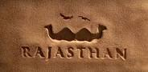
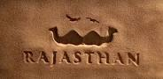

03 Days Best Of Rajsthan Tour -
AMER FORT
Amer Fort is known for its artistic Hindu style elements. With its large ramparts and series of gates and cobbled paths, the fort overlooks Maota Lake.[3][6][7][8][9][10] It is the main source of water for the Amer palace.
The aesthetic ambiance of the palace is seen within its walls. Constructed of red sandstone and marble, the attractive, opulent palace is laid out on four levels, each with a courtyard. It consists of the Diwan-e-Aam, or "Hall of Public Audience", the Diwan-e-Khas, or "Hall of Private Audience", the Sheesh Mahal (mirror palace), or Jai Mandir, and the Sukh Niwas where a cool climate is artificially created by winds that blow over a water cascade within the palace. Hence, the Amer Fort is also popularly known as the Amer Palace.

Day 01 :
The tour starts from Jaipur and journey leads to further destination which is forts present in Rajsthan.The Rajsthan's amer fort is the famous place in Rajsthan. Amer fort is situated in Amber and it is 11 km from Jaipur.

Day 02 :
Day 2
There are some other famous and important places near The Amer fort which you can visit.Many historical attraction places to visit in Rajastan.

Day 03 :
Day 03
Now also we can visit City palace,Jantar Mantar,Hawa Mahal which is also become the most visited place in Rajastan and also much more places to see.From a particular point and bring tourists back to around the same point next morning there are some specific cruises mostly in the Ashtamudi area, such as the one night cruise to Jaipur via visiting places.
CONFIRM YOUR TOUR RIGHT HERE....

Click here to logout